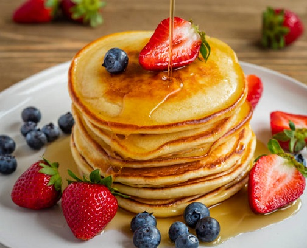

Pancake Recipe

Here is a savory pancake recipe that's easy to make.
Ingredients
- 1 kg flour
- 1 cup of sugar
- 2 big eggs
- Water
- A pinch of salt
- 10 Strawberries
- Butter
- honey
Directions on how to make Pancake
-
Mix your flour, sugar, salt, evenly in a bowl
-
Add water to a make semi thick paste.
-
place non stick frying pan on the heat and add a little butter to grease the pan
-
pour the paste in the pan and spread evenly to cover the pan
-
flip the pancake upside down so that the other side can fry
- Place the fried pancake on the plate and garnish it with Strawberriesn and honey